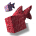
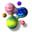

Avid readers, it is with great sorrow that I must inform you on the passing of the guestbook. Yes, it lasted exactly one blog post.
I was so giddy last post in promoting it because I was very proud of it. But today I visited it again to find that literally everything broke. I don't know how, I don't know why, but I think I'll blame... politicians...
But honestly I can't feel too bad. It was kind of out of place given all of the customizable stuff. However, the guestbook will return, just much simpler. Because it doesn't matter if every comment has the data of a simulated person living inside of it or a AI continent thriving off of it. It's a guestbook first, not a glamour show.
I'm sorry, that one was rough. Call it post-site-feature-execution-whiplash.
But as I was deleting every trace of the guestbook something just didn't sit right with me. Why did the guestbook shit itself when I tested it both locally and on github and it worked fine?
I'm not one to believe in superstitions, so what I'm about to tell you is completely sincere and plausible. I believe there is ademon in my site. Yes, a demon. There's simply nothing else that could explain the mishaps of the guestbook than a being of pure evil infesting itself into my pure website.
As of writing it's exactly four weeks from Halloween, so how about I give you a scary fable to memorize before then. The guestbook was not the only victim of thedemon.
The biggest problem with the guestbook was that submitting was bugged (or haunted, manipulated, take your pick). However a minor problem with the guestbook was that the preview icon for the message's background would not change no matter what. I could force the src in the console and it would not change. It's almost like what I was seeing wasn't the real pure preview. Almost like I was looking at a husk who's soul was sucked out of it.
I hate to be stereotypical, but that's textbookdemon shenanigans.
How about this very blog? For a while it was petrified, unable to be manipulated by any action despite being active and functioning in statu nascendi. Could thedemon be destroying my one method of communication? Is it stupid? Does it not know of life beyond the HTML?
But that's not all. The marquees on this site are haunted too. I'd like to preface by saying that if the guestbook was like my son, the marquee would be my infinitely more successful son. It could start spewing slurs (due toyou know who ) and I would hesitate to kill it. But when you load a new page, do you notice that sometimes the marquee abruptly cuts off? Almost like the presence of my alias makes the demon quiver, making him twitch in anger and fear.
I know I control the site and so I probably have more power than thedemon , but I can't risk losing my precious marquee. Demon , if you are reading this, I don't care if I am destined to not get the guestbook I desire, but lay one more finger on the marquee and I'll make this site a creepypasta. And not the liminal photo with contrast cranked up and spookie eyes kind.
But that's just superstition- I mean speculation. So if you see anything weird around here, you know who to blame.
Anyways, in case the guestbook doesn't come back, here are a collection of my favourite pins I made for it. Feel free to take them and give them a new home.
Now if you'll excuse me, I'll continue to fake-mourn the loss of the guestbook, and if thedemon is willing to set our differences aside I'm comfortable with him fake-mouring with me.
I was so giddy last post in promoting it because I was very proud of it. But today I visited it again to find that literally everything broke. I don't know how, I don't know why, but I think I'll blame... politicians...
But honestly I can't feel too bad. It was kind of out of place given all of the customizable stuff. However, the guestbook will return, just much simpler. Because it doesn't matter if every comment has the data of a simulated person living inside of it or a AI continent thriving off of it. It's a guestbook first, not a glamour show.
I'm sorry, that one was rough. Call it post-site-feature-execution-whiplash.
But as I was deleting every trace of the guestbook something just didn't sit right with me. Why did the guestbook shit itself when I tested it both locally and on github and it worked fine?
I'm not one to believe in superstitions, so what I'm about to tell you is completely sincere and plausible. I believe there is a
As of writing it's exactly four weeks from Halloween, so how about I give you a scary fable to memorize before then. The guestbook was not the only victim of the
The biggest problem with the guestbook was that submitting was bugged (or haunted, manipulated, take your pick). However a minor problem with the guestbook was that the preview icon for the message's background would not change no matter what. I could force the src in the console and it would not change. It's almost like what I was seeing wasn't the real pure preview. Almost like I was looking at a husk who's soul was sucked out of it.
I hate to be stereotypical, but that's textbook
How about this very blog? For a while it was petrified, unable to be manipulated by any action despite being active and functioning in statu nascendi. Could the
But that's not all. The marquees on this site are haunted too. I'd like to preface by saying that if the guestbook was like my son, the marquee would be my infinitely more successful son. It could start spewing slurs (due to
I know I control the site and so I probably have more power than the
But that's just superstition- I mean speculation. So if you see anything weird around here, you know who to blame.
Anyways, in case the guestbook doesn't come back, here are a collection of my favourite pins I made for it. Feel free to take them and give them a new home.


Now if you'll excuse me, I'll continue to fake-mourn the loss of the guestbook, and if the
Past Newsletters
Past newsletters will be listed here for your convenience! Beat's clicking the arrow a billion times.